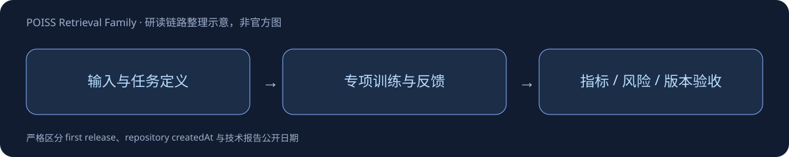

POISS Retrieval Family
BGE-M3地理位置检索与reranker，共用一个专项family；精确首发日待核实。
Overture 72M+ POIs
测试42018 queries
全库 R@100 83.2%

方法的关键
语义和地理坐标共同决定相关性，bi-encoder独立编码query/地点，ANN召回后可用cross-encoder精排。InfoNCE加hard negatives，使名称相似但位置或质量不合适的候选得到区分。
可转化成什么实验
地理检索应固定坐标精度、模板、语料版本与召回候选池。高召回不代表最终推荐满足用户偏好，模型没有消费评分的部分不能声称学习了地点质量。
资料阅读和发布日期边界以全文笔记为准。未读全文报告、日期待核实与许可矛盾均已明确写出，不虚构补齐。